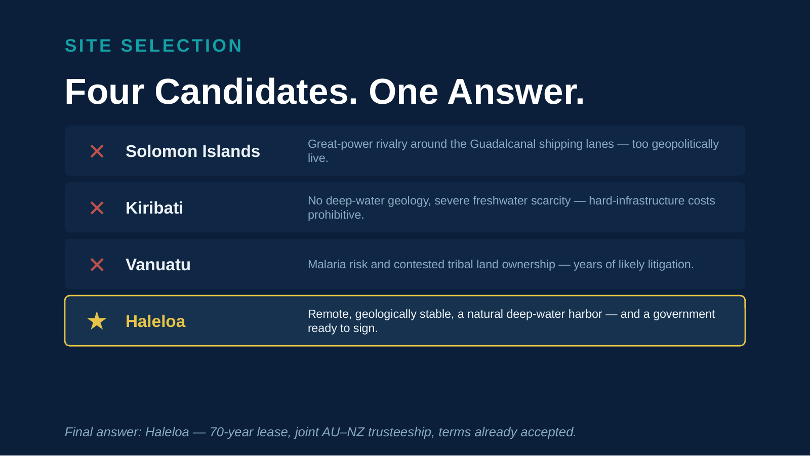

Meeting the Italian Prime Minister’s searching gaze, Marcus calmly clicked the mouse and switched the screen to the next slide: Finding the Right Island.

“Prime Minister, this is precisely the site negotiation we need to launch together after today.” Marcus set the red dot of his laser pointer on the green block on the left: Site Criteria.
“First, we need to be clear about what kind of island can carry the Beauville plan.”
First, remoteness. Physical distance is an advantage in itself, a natural shield against geopolitical aftershocks.
Second, buildability. Enough land, ample fresh water or good conditions for desalination, a stable climate, a location outside the main tropical cyclone tracks — and, most critically, the ability to build a deep-water port. Without throughput, there is no offshore economy.
Third, clear sovereignty. No territorial disputes, stable jurisdiction.
Fourth, long-term leasability. We are not asking for a transfer of sovereignty, but for a lease of seventy years or more, with the option to renew. That gives capital markets more than half a century of stable expectations.
He lowered the laser pointer and looked at the leaders along both sides of the long table.
“So, back to your question: why would a sovereign state be willing to offer its own land and help us build another Singapore? The answer is on the right.” He pointed to the yellow block: Host Country Benefits.
“For a small sovereign state in the South Pacific, this plan brings four benefits.”
1. Stable long-term rent: turning wasteland that has long sat idle and produced nothing into hard cash for decades to come.
2. World-class infrastructure: paid for by the contributing countries and built on the host country’s sovereign soil. When the lease ends, the deep-water port, the power grid and the modern industrial parks all belong to the host country.
3. Regional economic gravity: as the zone develops, trade, services and jobs will spill over into the host country and lift the whole region.
4. Most important of all, sovereignty fully preserved: the zone is not an independent kingdom. The host country retains the final veto on core matters such as security.
At the bottom of the slide was a line in small type:
A deserted island, at zero development cost, becomes an internationally funded economic hub.
“There are quite a few island nations in the South Pacific sitting on empty islands, with public finances on the verge of bankruptcy. When the G7 comes knocking with tens of billions in infrastructure seed funding, and a plan in which someone else does the developing and the ownership ends up theirs, why would they say no?”
The Canadian Prime Minister sat up, looked at the line at the bottom of the screen, and said slowly, “‘At zero development cost, an internationally funded economic hub.’ That does sound like a deal no landlord could refuse. So now perhaps you can tell us what’s at the top of your list.”
“The list is actually very short.” Marcus swiped across the console, and a comparison table of the South Pacific appeared on the screen, listing the names of four countries:

Solomon Islands
Kiribati
Vanuatu
Haleloa
At the sight of those names, the atmosphere at the table shifted subtly. The British and Australian Prime Ministers let their eyes rest on “Solomon Islands” for less than a second, then, in tacit agreement, looked away.
“We first assessed several of the larger islands in the Solomons.” Marcus drew a red cross through the first name. “Unfortunately, the geopolitical waters there are too rough. The rivalry among the major powers in that area has become too entrenched in recent years. Any significant arrangement for a special zone would be read as upsetting the strategic balance. We don’t want Beauville to become the fuse of a great-power confrontation before the first pile has been driven.”
“Next, Kiribati.” The red cross fell on the second name. “They have vast empty atolls, but the atolls lie too low and lack the geology for a deep-water port. Fresh water is extremely scarce as well. Early infrastructure costs would be astronomical.”
“Vanuatu’s malaria problem would drive early public health costs sharply higher. Worse still is the traditional system of customary land ownership there. The zone could easily become mired in years of land litigation.”
Finally, the red dot of the laser pointer came to rest on the name glowing in yellow highlight: Haleloa.
“So the answer can only be — must be — Haleloa.”
“Haleloa meets every physical criterion. It is remote enough. On the edge of this archipelago nation lies an outlying island of more than two thousand square kilometres — Loa Island. In the nineteenth century, measles and then influenza swept the island, and few of the original inhabitants survived. The survivors believed the island had been cursed by the gods, and every one of them sailed away to other islands. For nearly two hundred years since, Loa has been uninhabited; during the Second World War, warships anchored there only briefly. The island has a natural deep-water harbour, stable geology and a stable climate, and it lies outside the main tropical cyclone tracks.”
“But its most important advantage is the political will of its government.”
“Last week, under the President’s direct authorization, I held three rounds of closed-door consultations with Haleloa’s Prime Minister through EU diplomatic channels. While several other Pacific nations are still wavering between the major powers, or holding out for a higher price, Haleloa has seen its situation clearly: if it doesn’t secure a new round of sovereign debt restructuring funds within two months, its national credit will collapse completely.”
“So their need for this long-term rent is urgent. In a confidential letter of intent, they have not only accepted a seventy-year lease and a joint Australia–New Zealand trusteeship structure, but have also offered, on their own initiative, to hand the interpretation of civil and commercial law in the zone’s future legal framework to an international arbitral tribunal.”
“Haleloa has made every concession it can. If we miss a host country this cooperative, and this nearly perfect in location, it will be very hard to find a second window like it anywhere in the Pacific.”

The Italian Prime Minister raised an eyebrow. “Last week? Mr. Lim, you just told us the site negotiation would only begin ‘after today.’ It seems it began some time ago.”
Marcus didn’t evade it. “Only exploratory contact, Prime Minister. Without your authorization, we can’t commit to anything.”
“I sent him.” The EU President took over, his voice calm. “I didn’t want you all to spend an afternoon discussing a plan that had nowhere to land.”
The Italian Prime Minister looked at the EU President and didn’t press further.
The French President put down his coffee cup and turned to the Australian Prime Minister. “Prime Minister, it seems Canberra’s backyard is about to gain a super new neighbour that we’re all paying for. As its future security guarantor, don’t you plan to say something?”
In an instant, every eye in the room was on the Australian Prime Minister.
The Australian Prime Minister didn’t answer right away. He leaned back slightly and let his gaze rest on the table for a second, as if arranging a form of words he had prepared long ago.
“Let me make one thing clear first,” he said. “Australia has always supported any multilateral mechanism that can ease long-term structural pressures in the region.”
He paused.
“But the Haleloa proposal is still at the stage of conceptual discussion. It has not entered any formal intergovernmental commitment process.”
The French President raised an eyebrow slightly but didn’t interrupt.
“If this idea is to move forward, it must meet three preconditions: a transparent governance structure, a clear allocation of legal responsibility, and full respect for the long-term sovereign arrangements of Pacific island nations. Until those conditions have been fully discussed, Australia cannot commit to any specific role.”
The French President slowly sat back, the corner of his mouth twitching. “Prime Minister, translate your three preconditions into plain language, and they mean — Australia is interested, but needs more time.”
The Australian Prime Minister glanced at him and smiled with his lips pressed together. “Yes.”
The French President paused. “Actually, I feel the same way. Besides, ‘allocation of legal responsibility’ is exactly the question I asked Marcus earlier — who is responsible.”
Around the table, some people smiled, some nodded. The Italian Prime Minister said, “This deserves further discussion.”
The German Chancellor didn’t nod right away. He only looked down and wrote a few lines in his notebook.
The EU President looked around the table and said calmly, “Then in the next session, we’ll discuss the three preconditions raised by the Australian Prime Minister: governance structure, allocation of legal responsibility, and respect for the sovereign arrangements of Pacific island nations.”
He closed the folder in front of him. “That’s all for today. Enjoy the rest of your day.”
The leaders rose one after another, their chairs whispering against the carpet. The room soon emptied.
Marcus was the last to leave. Before closing his laptop, he looked once more at the name on the screen.
Haleloa. He did not yet know that, in the island’s old language, hale meant home, and loa meant far away.